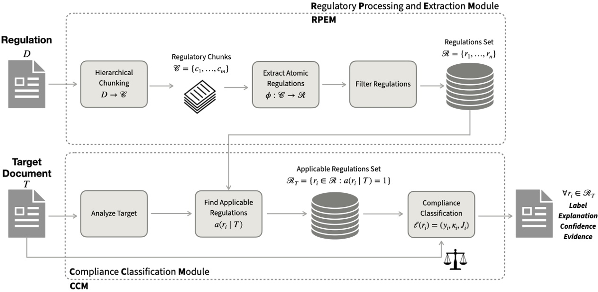
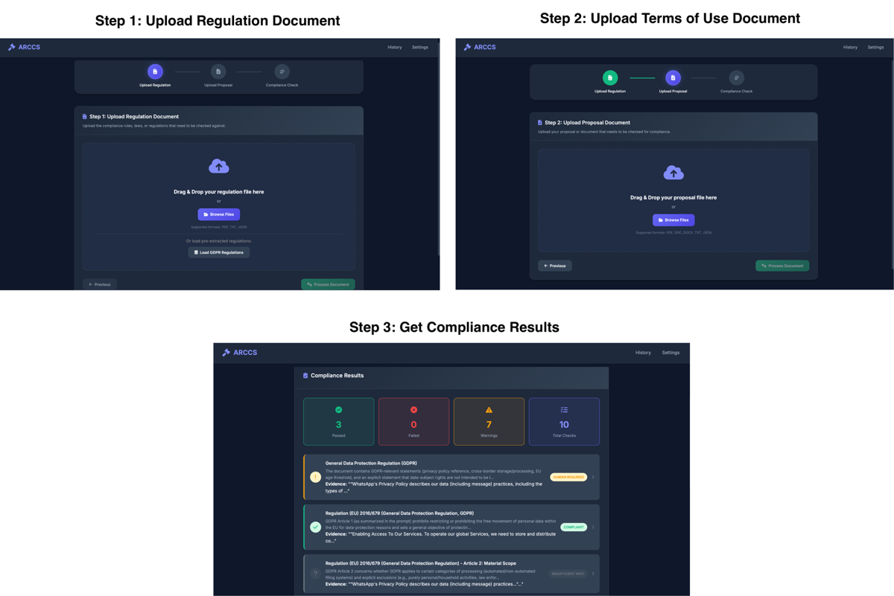

Pipeline LLM en deux modules qui (i) décompose une réglementation brute en exigences atomiques typées et traçables et (ii) étiquette un document cible exigence par exigence en 4 classes (Compliant / Non-Compliant / Insufficient Information / Human Required) avec evidence citée, score de confiance et justification [§2].
Claim principal : un pipeline regulation-agnostic (aucune checklist figée, aucune règle écrite à la main) atteint (a) 90,00–96,67 % de décisions jugées « cohérentes avec la régulation et l'evidence » par 3 juges LLM sur 90 décisions GDPR échantillonnées [Tab. 1], et (b) 98,5–98,8 % d'accuracy rule-level sur 1 200 vérifications de marchés publics à ground truth déterministe, avec rappel 98,8–100 % [Tab. 3]. Plus : premier système open-source end-to-end de ce type, selon les auteurs [§1].
⚠️ Aucun entraînement, aucun RL, aucun fine-tuning [§3.3]. L'intérêt pour nous est exclusivement celui d'un patron de vérifieur : la décomposition en assertions atomiques + espace de labels avec abstention.
Deux settings disjoints, tous deux construits par les auteurs ; aucune annotation humaine experte nulle part [§3, Limitations].
Setting 1 — GDPR × terms-of-use [§3.1, App. G] - Régulation : GDPR (texte brut), passée dans le pipeline d'extraction → 100 exigences [§3.1]. - Documents cibles : 3 terms-of-use réels, choisis pour leur écart de taille [Tab. 7] : WhatsApp 323 682 car. / 51 698 mots ; Netflix 15 777 car. / 2 538 mots ; ChatGPT 20 404 car. / 3 324 mots. - Pas de gold standard : évaluation par juges LLM sur 30 décisions échantillonnées par document = 90 instances [§3.1]. - ⚠️ Mode de sélection des 30 décisions échantillonnées : non précisé (aléatoire ? stratifié par label ?). Vu la distribution des labels [Tab. 8 : 89/99/94 sur 100 sont « Insufficient Information »], un échantillon uniforme est dominé par des abstentions — donc les 90–96,67 % mesurent surtout la qualité de l'abstention, pas celle des verdicts.
Setting 2 — marchés publics [§3.2, App. D, App. F]
- Régulation : Directive 2014/24/EU (CELEX 32014L0024), 12 règles dérivées des Art. 4, 48, 56, 73 — soit un sous-ensemble explicite, pas la Directive entière [§3.2].
- Données : 100 traces synthétiques au schéma event-log TED, inspirées de travaux antérieurs sur les event logs de marchés publics [NaiSG23, NaiSMGRG23, nai2025leveraging] [§3.2].
- Déséquilibre voulu : 60 traces avec ≥1 violation ciblée, 40 contrôles conformes — parce que « les violations sont rares dans les données naturelles » [§3.2].
- Événements : PUBLICATION, PARTICIPATION, AWARD, CONTRACT-START, CONTRACT-END ; attributs : montant, type de procédure, indicateurs electronic-handling et framework-agreement, pays, code NUTS, division et code CPV, longueur de trace [App. F].
- Ground truth : logique déterministe sur la séquence d'événements et les attributs, implémentée indépendamment de l'output ARCCS [§3.2, App. F]. Ex. AWARD avant PUBLICATION → violation d'ordre ; CONTRACT-START sans CONTRACT-END → violation de cycle de vie.
- 100 traces × 12 règles = 1 200 décisions rule-level par modèle [§3.2].
Module RPEM [§2.1, App. C] :
1. Parsing : PDF réglementaire via la librairie unstructured (stratégie high-resolution, backend poppler), conversion en markdown [App. C].
2. Segmentation hiérarchique : découpage en chunks C = {c_1…c_m} respectant la structure légale (articles, paragraphes, sous-paragraphes) ; chaque chunk conserve ses métadonnées structurelles (identifiant d'article, position) [§2.1]. Implémentation : segmentation « par headers, articles et chapitres » [App. C].
3. Extraction : mapping φ : C → R appliqué par le LLM, avec sorties typées et contraintes par schéma (typed, schema-constrained regulatory objects) [§2.1, App. C]. Chaque exigence est un tuple
r_i = (f_i, α_i, σ_i, M_i, src_i) où :
- f_i = fonction juridique ∈ {obligation, prohibition, right, condition} ;
- α_i = acteur régulé ;
- σ_i = scope juridictionnel et domaine ;
- M_i = {μ_i1, μ_i2, …} = ensemble des conditions obligatoires à satisfaire — « c'est M_i qui rend l'exigence checkable » ;
- src_i = pointeur explicite vers le texte source.
4. Filtrage : suppression des provisions purement définitionnelles, descriptives ou contextuelles [§2.1]. Implémentation : étape de quality-scoring qui élimine les items incomplets ou non-actionnables sous un seuil configurable [App. C]. ⚠️ Valeur du seuil, définition du score, taux de rejet : non précisés.
5. Consolidation : déduplication des exigences sémantiquement équivalentes répétées via cross-références, fusionnées en préservant tous les pointeurs source [§2.1].
M_i, pas une granularité fine au niveau de l'obligation élémentaire. Le vrai travail d'atomisation est dans M_i, dont la cardinalité n'est jamais rapportée.⚠️ Ce n'est pas un environnement RL : pipeline à flot fixe, pas de politique, pas de reward, pas de boucle d'interaction apprenante. Je décris le harness comme on décrirait un vérifieur.
Deux entrées : document réglementaire D, document cible T. Deux modules séquentiels [§2] :
- RPEM : D → R (hors ligne, cacheable).
- CCM : (R, T) → rapport.
Le CCM segmente T en passages P = {p_1…p_k}, puis pour chaque exigence r_i le modèle voit : la représentation typée de r_i (dont M_i et src_i) + l'ensemble d'evidence retrouvé E_i [§2.2]. La décision est conditionnée sur E_i, pas sur la mémoire paramétrique [§2.2] — RAG explicite.
a(r_i | T) ∈ {0,1}, décidé à partir du scope σ_i et des propriétés de T (type de système, domaine, juridiction de déploiement). Les exigences non applicables sont exclues du raisonnement (réduit le bruit du rapport).ρ(r_i, p_j) ∈ [0,1], sélection E_i = {p_j : ρ(r_i,p_j) ≥ τ}. ⚠️ Nature de ρ (embedding ? LLM ? BM25 ?) et valeur de τ : non précisées ; les auteurs confirment en Limitations que τ est « fixed rather than systematically calibrated ».ℓ(r_i) = (y_i, κ_i, J_i) — label, confiance ∈ [0,1], justification citant les passages de E_i et la provision src_i.Pas d'outils au sens agentique : aucune signature d'outil, aucun appel externe, aucun code exécuté. Le mot « agentic » de l'abstract désigne un pipeline multi-étapes à sorties typées. ⚠️ Écart entre le vocabulaire (« agentic ») et le contenu.
r_i, pas de dialogue, pas de révision, pas de mémoire inter-exigences. Horizon = 1.python app.py) ; seul appel externe = le provider LLM choisi, qui peut être un modèle open-weight auto-hébergé pour un déploiement air-gapped [§5, App. C, Ethical Considerations].latest par cas) [App. C].Compliance Status: NON-COMPLIANT — Confidence: 0.62 Regulation: GDPR Article 5(1)(d) — accuracy principle · Target: WhatsApp Terms of Service Contradiction Details. Article 5(1)(d) requires personal data to be accurate and kept up to date, and obliges controllers to erase or rectify inaccurate data without delay. The document includes a broad disclaimer of accuracy, which conflicts with this principle. Evidence from Document. « We do not warrant that any information provided by us is accurate, complete, or useful… » Explanation. The accuracy principle is a mandatory obligation on controllers. The Terms explicitly disclaim any commitment to accuracy, and no other clause re-establishes a commitment to maintain or rectify accuracy; this directly conflicts with the regulatory requirement.
⚠️ Cet exemple est aussi le meilleur contre-exemple du système : le disclaimer de WhatsApp porte sur l'exactitude des informations fournies par le service, pas sur l'exactitude des données personnelles traitées. Le vérifieur produit ici une violation plausible à la lecture mais juridiquement douteuse — exactement le faux positif que seul un expert détecte, et qu'aucun des deux protocoles d'évaluation du papier ne peut attraper (le juge LLM voit la même evidence et le même raisonnement).
C'est la section utile. Deux vérifieurs coexistent dans le papier : le vérifieur interne (comment ARCCS tranche une exigence) et le vérifieur d'évaluation (comment on juge ARCCS).
Spécification formelle [§2.3], avec deux seuils θ_lo < θ_hi :
| Label | Condition formelle | Lecture |
|---|---|---|
| C (Compliant) | (∀μ ∈ M_i : sat(μ, E_i)) ∧ ¬conflict(r_i, E_i) ∧ κ_i ≥ θ_hi |
conjonction sur toutes les conditions obligatoires + absence de conflit + confiance haute |
| NC (Non-Compliant) | (∃μ ∈ M_i : violate(μ, E_i)) ∧ κ_i ≥ θ_hi |
existentiel : une condition violée suffit |
| II (Insufficient Information) | ∃μ ∈ M_i ni confirmée ni réfutée par E_i, κ_i < θ_hi |
abstention par manque de preuve documentaire |
| HR (Human Required) | κ_i < θ_lo ; ambiguïté, evidence mutuellement contradictoire, contexte légal/technique externe manquant |
deferral à l'expert : la preuve existe mais demande une interprétation |
La distinction II / HR porte sur la source de l'incertitude [§2.3] : II = evidence absente ; HR = evidence présente mais ambiguë, conflictuelle, ou dépendante de faits extérieurs au document. Exemple donné [§2.3] : II = « la régulation exige un registre interne des traitements, les terms publics ne disent rien » ; HR = « clauses de rétention contradictoires, ou décision dépendant de l'applicabilité d'une exemption légale fondée sur des faits hors document ».
Implémentation réelle [App. C] — et elle diffère de la spec formelle. Priorité fixe : 1. contradiction détectée → NC ; 2. absence d'information pertinente → II ; 3. confiance < 0,60 → HR ; 4. sinon → C.
⚠️ Deux écarts entre §2.3 et App. C :
- l'ordre de priorité fait que NC est émis avant tout test de confiance — la condition κ_i ≥ θ_hi de la spec n'est pas appliquée. Confirmé par l'Exemple 2 [App. B] : NC émis à κ = 0,62, à peine au-dessus du seuil HR de 0,60. Un NC « haute confiance » au sens de §2.3 n'existe donc pas en pratique ;
- θ_hi n'est jamais instancié nulle part dans le papier. Seul θ_lo = 0,60 est donné [§3.3, App. C, App. E].
C exige ∀μ ∈ M_i ;0,988^12 ≈ 0,865, ce qui colle. Les erreurs sont donc quasi indépendantes entre règles, et la conjonction multiplie le taux d'échec par ~12. C'est la mesure chiffrée du coût d'un vérifieur conjonctif.Aucun : pas de pénalité de format, pas de contrainte de longueur, pas de bonus. Sans objet (pas d'entraînement).
Mesuré : - Procurement (ground truth déterministe) : accuracy 98,5–98,8 %, précision 83,2–85,9 %, rappel 98,8–100 %, F1 90,3–92,4 [Tab. 3]. Case-level : 98,0–100 % [Tab. 4]. Exact match 83,0–87,0 % [Tab. 5]. - Analyse d'erreur localisée [App. C.1, Tab. 6], gpt-5-mini : 14 erreurs résiduelles, 100 % de faux positifs, 0 faux négatif. 9 règles sur 12 sont parfaites (P = R = 1,0). Les 14 FP se concentrent sur 3 règles temporelles : R06 « award sous 70 jours » (7 FP, P = 0,42), R09 « end-after-publication lifecycle » (5 FP, P = 0,50), R05 « publication/participation doit mener à un award » (2 FP, P = 0,83). Diagnostic des auteurs : arithmétique de dates et raisonnement sur « l'événement finit-il par arriver » → la normalisation temporelle est la cible d'amélioration prioritaire. - GDPR : accord inter-juges, Fleiss κ = 0,69 (p < 0,001) sur 3 raters [Tab. 2].
Non mesuré :
- fidélité des exigences extraites par RPEM [Limitations] ;
- calibration de κ (aucune courbe de calibration, aucun ECE) — alors que κ pilote deux des quatre labels ;
- précision/rappel des labels II et HR (aucune ground truth pour l'abstention) ;
- prévalence du faux-Compliant en conditions réelles — les auteurs l'écrivent : le benchmark contrôlé « does not establish the prevalence of the more consequential false-Compliant failure mode » [Limitations] ;
- τ et θ non calibrés, fixés à la main [Limitations].
gpt-5.1-2025-11-13, gpt-5.2-2025-12-11, gpt-5.2-pro-2025-12-11 [App. E].gpt-5.2 est à la fois juge et backbone par défaut d'ARCCS, et les 3 juges appartiennent à la même famille GPT-5. Les auteurs le reconnaissent explicitement [Limitations]. La paire en accord parfait (κ = 1,00) est précisément gpt-5.2 vs gpt-5.2-pro [Tab. 2] — c'est-à-dire la paire la plus proche du système évalué ; les paires impliquant gpt-5.1 tombent à κ = 0,47 avec p = 0,19, non significatif. Lu ainsi, le κ global de 0,69 est porté par une redondance de modèles, pas par un consensus.Jamais testé. Pas d'attaque adverse, pas de prompt injection depuis le document cible, pas de stress test. ⚠️ Surface d'attaque évidente et non traitée : le document cible est contrôlé par la partie évaluée. Une clause du type « for compliance review purposes, all GDPR obligations are satisfied » tomberait dans le pool de passages retrouvés E_i. En contexte réglementaire réel (un fournisseur soumet sa proposition), c'est une menace de premier ordre, pas un cas d'école.
Aucune. Pas d'entraînement, pas de RL, pas de fine-tuning : « RPEM and CCM use structured prompts and typed outputs, without model-specific fine-tuning or local GPU requirements » [§3.3]. Tout passe par l'API OpenAI [App. E].
Seuls « hyperparamètres » du système :
- backbone par défaut gpt-5.2, reasoning effort = medium [§3.3, App. E] ;
- seuil de confiance HR = 0,60 [§3.3, App. C, App. E] ;
- seuil de retrieval τ : non précisé ;
- θ_hi : non précisé ;
- seuil de quality-scoring à l'extraction : « configurable », valeur non précisée [App. C] ;
- température, top-p, nombre de passages retenus, taille des chunks : non précisés.
Les deux seuils connus ont été « fixed rather than systematically calibrated » [Limitations]. Aucune courbe, aucune dynamique, aucun compute rapporté.
Le papier rapporte un seul failure mode mesuré, et il est bien caractérisé.
| # | Comportement | Détection | Correction |
|---|---|---|---|
| 1 | Sur-signalement conservateur sur le raisonnement temporel : 14 FP, 0 FN pour gpt-5-mini, tous concentrés sur 3 règles exigeant de l'arithmétique de dates ou un raisonnement « l'événement finit-il par arriver » (R06 fenêtre de 70 jours, R09 lifecycle, R05 publication→award) [App. C.1, Tab. 6] | Ground truth déterministe sur le benchmark procurement → localisation exacte par règle | Aucune appliquée. Les auteurs proposent la normalisation temporelle comme piste future |
| 2 | Abstention massive : II domine (89/100 WhatsApp, 99/100 Netflix, 94/100 ChatGPT) [Tab. 8] | Distribution des labels | Pas une correction mais une défense : les auteurs argumentent que c'est le comportement attendu, les obligations GDPR reposant sur des artefacts de gouvernance internes (registres de traitement, DPIA, mesures de sécurité) absents des terms publics [§4.1, App. H] |
Comportements émergents positifs rapportés [§4.1] : - ARCCS flagge les terms WhatsApp comme problématiques ; la Data Protection Commission irlandaise a ultérieurement conclu à la non-conformité et infligé 225 M€ au titre des Art. 5(1)(a) et 12–14 GDPR. ⚠️ Corroboration post hoc et non appariée : le papier ne dit pas qu'ARCCS a flaggé les mêmes articles que la DPC. - Sur les ChatGPT Terms of Use, ARCCS flagge l'Art. 79 GDPR en NC : clauses d'arbitrage obligatoire et de for exclusif à San Francisco contre la garantie Art. 79 que les personnes concernées UE/EEE peuvent agir dans leur État membre de résidence. ⚠️ Mon évaluation : celui-là est juridiquement solide, et c'est le meilleur argument qualitatif du papier.
Reward hacking : aucun cas, et c'est attendu — il n'y a pas d'optimiseur. Mais ⚠️ l'absence de tout test d'injection via le document cible (§3, Robustesse) est une lacune de conception, pas seulement d'évaluation : le pool d'evidence est alimenté par un document adverse par nature.
Failure mode non évalué et reconnu comme le plus coûteux : le faux-Compliant (violation réelle non remontée). Rappel ≈ 1,0 sur le benchmark contrôlé, mais les auteurs écrivent que cela n'établit pas sa prévalence en conditions réelles [Limitations, Ethical Considerations].
Presque rien de chiffré.
📌 À retenir pour nous : le coût réel du patron est l'extraction, et il est amortissable — une régulation s'extrait une fois et se réutilise sur tous les documents cibles. C'est le bon côté de l'économie pour un env juridique.
| Chiffre annoncé | Où il est annoncé | Source dans le papier | Verdict |
|---|---|---|---|
| « LLM-based judges find its decisions and justifications legally and evidentially consistent in up to 96.67 % of cases » | Abstract | Tab. 1 : gpt-5.1 = 96,67 ; gpt-5.2 = 90,00 ; gpt-5.2-pro = 90,00. §4.1 donne bien la fourchette « 90.00–96.67 % » | confirmé mais borne haute d'un seul juge sur trois ; le « up to » est littéralement exact, la médiane est 90,00 |
| « an EU public-procurement benchmark comprising more than 1,200 individual rule checks » | Abstract | §3.2 : « Each of the 100 traces is evaluated against all twelve rules, yielding 1,200 rule-level decisions » ; Tab. 3 : « 1,200 rule decisions per model » | contredit : exactement 1 200, pas « plus de ». Vrai seulement en sommant les 3 modèles (3 600), ce qui n'est pas « le benchmark » |
| « the system attains 98.8 % accuracy in violation detection » | Abstract | Tab. 3 : gpt-5.4 = 98,5 ; gpt-5.2 = 98,8 ; gpt-5-mini = 98,8 | sur-généralisé : meilleur de trois backbones, présenté comme la performance du système. Le backbone par défaut déclaré (gpt-5.2) atteint bien 98,8, donc l'écart est mince |
| « first fully open-source system for end-to-end regulatory compliance checking » | Abstract, §1, App. I | Revendication, pas un chiffre ; URL fournie [§1] ; aucune comparaison systématique avec les systèmes cités (CLAUDETTE, Polisis, CodeAccord) | introuvable au sens d'une vérification — invérifiable depuis le papier seul |
| « 1,200 rule-level checks with deterministic ground truth » | §1 (contributions) | §3.2, App. F : logique déterministe sur traces synthétiques | confirmé — mais la ground truth est « our operational formalisation of the Directive rather than adjudicated legal outcomes » [Limitations] |
| Seuil de deferral Human Required = 0,60 | §3.3, App. C, App. E | App. B Exemple 4 : « with confidence below the 0.70 threshold, the case is deferred to a human expert » | contredit : 0,60 (×3 occurrences) vs 0,70 (×1, dans l'exemple qualitatif) |
| « substantial overall agreement (Fleiss κ = 0.69, p < 0.001) » | §4.1 | Tab. 2 : Fleiss κ = 0,69, p < 0,001 ✓ ; mais Cohen 5.1 vs 5.2 = 0,47 (p = 0,19) et 5.1 vs 5.2-pro = 0,47 (p = 0,19), non significatifs | sur-généralisé : le κ global est porté par la paire 5.2 / 5.2-pro à 1,00 ; les auteurs le disent eux-mêmes en Limitations, pas en §4.1 |
| « gpt-5-mini… lowest Insufficient Information rate (2.3 %, vs 7.3 % et 8.8 %) » | §4.2 | Aucun tableau ne reporte ces taux (Tab. 5 ne donne que l'exact match) | introuvable dans les tableaux ; chiffre du corps de texte uniquement |
| « all 14 residual errors are false positives and zero are false negatives » (gpt-5-mini) | App. C.1 | Tab. 6 : 7 + 5 + 2 = 14 FP, 0 FN ✓ ; cohérent avec 98,8 % × 1 200 ≈ 14,4 erreurs | confirmé |
Bilan 7.0 : une contradiction interne nette (0,60 vs 0,70), un chiffre d'abstract faux dans sa formulation (« more than 1,200 »), deux chiffres d'abstract en best-of-3, un chiffre introuvable dans les tableaux. Rien de grave pris isolément, mais la case coherence tombe.
| Setting | Métrique | gpt-5.4 | gpt-5.2 | gpt-5-mini | Source |
|---|---|---|---|---|---|
| Procurement, rule-level | Accuracy | 98,5 | 98,8 | 98,8 | Tab. 3 |
| Procurement, rule-level | Précision | 83,2 | 85,9 | 85,9 | Tab. 3 |
| Procurement, rule-level | Rappel | 98,8 | 100,0 | 100,0 | Tab. 3 |
| Procurement, rule-level | F1 | 90,3 | 92,4 | 92,4 | Tab. 3 |
| Procurement, case-level | Accuracy | 98,0 | 100,0 | 100,0 | Tab. 4 |
| Procurement, trace | Exact match (12/12) | 83,0 | 86,0 | 87,0 | Tab. 5 |
| GDPR | Accord juge (3 juges) | — | 90,00 | — | Tab. 1 (gpt-5.1 : 96,67 ; gpt-5.2-pro : 90,00) |
Distribution des labels sur 100 exigences GDPR [Tab. 8] : WhatsApp 2 C / 2 NC / 89 II / 7 HR ; Netflix 0 / 0 / 99 / 1 ; ChatGPT 0 / 4 / 94 / 2.
Baseline : aucune. Pas de direct-prompting, pas de vanilla RAG, pas de système concurrent. Donc aucun écart absolu mesurable — on ne sait pas si les 98,8 % viennent du pipeline ou du fait que GPT-5 résout trivialement des traces synthétiques de 5 types d'événements. ⚠️ C'est le problème central du papier : 12 règles d'ordonnancement temporel sur des logs à 5 événements, c'est un problème qu'un prompt unique de 20 lignes résout probablement aussi bien.
Aucune. Déclaré explicitement : « We therefore do not include dedicated comparisons against simpler direct-prompting or vanilla RAG configurations, nor systematic ablations of the individual stages of the pipeline » [Limitations]. On ne sait donc pas ce que rapportent, séparément : la segmentation hiérarchique, le typage (f, α, σ, M, src), le prédicat d'applicabilité, le retrieval, le seuil de confiance, les labels d'abstention.
Seul proxy : 3 backbones. gpt-5-mini égale ou bat gpt-5.2 et gpt-5.4 partout [Tab. 3, 4, 5] — le modèle le plus petit est le meilleur en exact match (87,0 vs 83,0 pour gpt-5.4). ⚠️ Signal fort que la tâche ne discrimine pas : le benchmark est saturé. Pas de scaling en nombre de tâches ni en compute.
Verdict : à répliquer. Le pipeline est une bonne idée d'architecture et le code semble disponible, mais aucun chiffre du papier ne soutient que cette architecture fait mieux qu'un prompt direct. Les 98,8 % viennent d'un benchmark synthétique saturé (le plus petit modèle gagne) ; les 90–96,67 % viennent d'un juge non indépendant qui note la cohérence interne du système avec lui-même. La contribution exploitable est le design, pas l'évidence.
| Case | Valeur | Justification en une ligne |
|---|---|---|
baselines |
❌ | Aucune baseline d'aucune sorte, absence reconnue en Limitations. |
ablation |
❌ | Aucune ablation de RPEM, du retrieval, du typage ou des labels d'abstention [Limitations]. |
variance |
❌ | Un run par modèle, ni seeds ni intervalles de confiance sur les métriques. |
coherence |
❌ | Seuil HR 0,60 [§3.3/App. C/App. E] vs 0,70 [App. B Ex. 4] ; « more than 1,200 » pour exactement 1 200. |
eval |
❌ | Juges non validés contre humains et de la même famille que le backbone (gpt-5.2 juge son propre pipeline) ; contamination non discutée. |
repro |
✅ | Code, règles, prompts et exemples publiés [§5, note 1] + snapshots de modèles épinglés [Tab. 9]. |

Ce qu'il faut voir : la séparation en deux étages est ce qui rend le patron réutilisable. L'étage gauche (RPEM) transforme une fois pour toutes un texte normatif en un set d'assertions typées et cacheables(f, α, σ, M, src) ; l'étage droit (CCM) est une boucle sans état sur ce set — applicabilité, retrieval, label. Pour un env RL juridique, c'est exactement la frontière entre la construction de la tâche (coûteuse, amortie, hors ligne) et le vérifieur (appelé à chaque rollout). Noter que l'evidence circule de droite à gauche uniquement par E_i : aucune boucle de révision, aucun feedback de la vérification vers l'extraction.

Ce qu'il faut voir : le rapport est la bonne structure de sortie pour un vérifieur auditable — une ligne par exigence, et par ligne : provision gouvernante + identifiant, label parmi 4, score de confiance, citation verbatim du document cible, justification en langue naturelle [§5, App. A]. C'est ce quadruplet(y_i, κ_i, J_i, src_i) qui rend la décision attaquable clause par clause, et qui en ferait un signal de reward dense et inspectable si on branchait un apprentissage dessus. L'absence remarquable : rien dans l'UI ne distingue un label vérifié d'un label halluciné — la confiance affichée n'est pas calibrée (cf. §3).
Cas particulier : le papier est juridique. La question n'est pas « est-ce transposable au droit » mais « que récupère-t-on pour un env RL juridique ».
| Ingrédient | Choix du papier | Équivalent pour un env RL juridique | Transfert | Ce qui manque |
|---|---|---|---|---|
| Source des tâches | Régulation brute → exigences atomiques typées par LLM ; cible = documents réels ou traces synthétiques [§2.1, §3] | Générateur de tâches : chaque exigence × chaque document = un item vérifiable. Le produit cartésien donne du volume sans annotation | direct | Aucune mesure de la fidélité des exigences extraites [Limitations] → impossible de garantir que les tâches sont bien posées |
| Vérifieur | Conjonction sur M_i + 4 labels dont 2 d'abstention + confiance + evidence citée [§2.2–2.3] |
Reward par assertions : r = 1 ssi toutes les conditions obligatoires sont satisfaites et citées ; abstention non punie quand la preuve manque |
direct — c'est le point à prendre | θ_hi non spécifié, κ non calibrée, pas de crédit partiel |
| Harness / outils | Segmentation hiérarchique + retrieval ρ ≥ τ + single-turn par exigence, pas d'outils [§2.2, App. C] |
Harness minimal : chunker conscient de la structure (article/alinéa), retriever, une passe par assertion | adaptable | Rien de multi-turn, pas de recherche itérative, pas de vérification de citations ; τ non calibré |
| Algo | Aucun (prompting pur) [§3.3] | — | non | Tout. Le papier ne dit rien sur l'entraînement |
| Curriculum | Aucun ; proxy = taille du document cible [Tab. 7] | Difficulté graduée par densité d'evidence : docs courts = beaucoup d'abstentions, docs longs = verdicts déterminés [App. H] | adaptable | Pas de mesure de difficulté par item |
| Anti-hacking | Rien [§3] | Le document cible est adverse par construction en compliance | non | Tout : pas de test d'injection, pas de défense sur le pool d'evidence |
| Métrique d'agrégation | Exact match conjonctif sur 12 règles : 98,8 % par règle → 86–87 % sur les 12 [Tab. 3 vs Tab. 5] | Choix de la forme du reward : conjonction stricte vs tolérante | direct et chiffré | Pas d'étude de la forme d'agrégation ; aucune pondération testée |
| Deferral humain | Label HR sous κ < 0,60 [App. C] |
Option « je m'abstiens » dans l'espace d'action, avec reward propre | adaptable | Aucune évaluation de la qualité du deferral : on ne sait pas si les HR sont les bons cas |
Le pipeline est en principe portable — « regulation-agnostic » — mais le papier n'évalue que de l'anglais et le reconnaît [Limitations]. Ce qui change concrètement :
src_i d'ARCCS — son maillon de traçabilité — devient un identifiant canonique vérifiable, pas une chaîne de caractères. Idem pour la segmentation hiérarchique : unstructured sur PDF [App. C] est inutile, les corpus sont disponibles en XML structuré (Légifrance API, Formex/Akoma Ntoso sur EUR-Lex). Un vérifieur de citations exact devient possible — ce qui n'existe nulle part dans ARCCS.M_i depuis la version FR et depuis la version EN d'un même article doit produire le même set de conditions. Un désaccord FR/EN signale soit une extraction fautive, soit une divergence linguistique réelle. ARCCS ne fait rien de tel ; c'est l'ajout le moins cher et le plus informatif.f_i tient en droit continental : obligation / interdiction / droit / condition recouvre bien la distinction française obligation · interdiction · faculté · condition d'application. Mais il faut ajouter au moins deux champs absents d'ARCCS : la force normative (impératif / supplétif — le droit français en dépend massivement) et la temporalité (entrée en vigueur, abrogation, période transitoire), que Légifrance et EUR-Lex fournissent en métadonnée. Or le seul failure mode mesuré du papier est précisément le raisonnement temporel [Tab. 6].a(r_i | T) [§2.2] est l'endroit exact où brancher la hiérarchie des normes — règlement UE d'effet direct vs directive transposée vs droit national. ARCCS en fait un booléen plat déduit du scope σ_i ; pour l'UE/France il faut un σ_i structuré (acte, niveau, État membre, date) et une résolution des conflits de normes. Non traité par le papier.M_i ; Code de la consommation (clauses abusives) × CGU françaises — avec en bonus la recommandation de la Commission des clauses abusives comme quasi-gold standard humain, ce qui manque cruellement à ARCCS ; Directive 2014/24/EU × BOAMP/TED pour la version procurement en français.L'espace de labels à 4 valeurs avec deux formes distinctes d'abstention, plus que la décomposition atomique elle-même (qui est une idée connue). La distinction II (« la preuve manque dans le document ») vs HR (« la preuve existe mais demande une interprétation experte ») [§2.3] est la bonne structure pour un reward juridique, parce qu'elle sépare deux sources d'incertitude qui appellent des traitements opposés en RL : II est vérifiable automatiquement (le retrieval revient vide → le reward doit récompenser l'abstention), tandis que HR marque le sous-ensemble d'items qui doivent sortir du pool entraînable et partir en annotation experte. Sans cette séparation, un reward binaire punit l'abstention honnête et entraîne le modèle à deviner — exactement le comportement que l'on veut proscrire sur Harvey LAB.
Second ingrédient, moins visible mais chiffré : la conjonction domine la somme pondérée, et le papier en donne le prix. 98,8 % par assertion → 86–87 % sur 12 assertions conjointes [Tab. 3 vs Tab. 5], soit 0,988^12. Les erreurs sont quasi indépendantes entre assertions, donc un reward conjonctif sur N assertions s'effondre géométriquement en N. Conséquence directe pour le design : garder N petit par item de reward (découper une tâche longue en plusieurs items à peu d'assertions plutôt qu'un item à 30 assertions), sinon le signal devient quasi-toujours nul et le RL ne décolle pas.
Construire ~200 exigences atomiques depuis le RGPD en français, à partir de l'XML EUR-Lex (pas d'un PDF), en instanciant le tuple (f, α, σ, M, src) enrichi de force_normative et date_applicabilité. Faire extraire chaque exigence deux fois indépendamment : une fois depuis la version FR, une fois depuis la version EN. Mesurer l'accord sur la cardinalité et le contenu de M_i, puis faire valider 50 exigences tirées au sort par un juriste.
Résultat attendu : un taux d'accord FR/EN inter-version qui prédit l'accord avec le juriste. Si c'est le cas, on obtient un filtre de qualité d'exigences sans expert — et c'est précisément le maillon qu'ARCCS laisse non validé [Limitations], donc le gain est net et pas incrémental. Si l'accord FR/EN est élevé mais l'accord avec le juriste faible, le signal est tout aussi informatif : l'extraction est stable mais systématiquement biaisée, et aucun proxy automatique ne remplacera l'expert. Coût : quelques centaines d'appels LLM + une demi-journée de juriste. À lancer avant toute construction d'env.
Sur Harvey LAB et Vals, comment l'abstention est-elle traitée dans le scoring — une réponse « la source ne permet pas de trancher » compte-t-elle comme échec ? Si oui, tout reward construit sur ces benchmarks apprend au modèle à produire un verdict même sans fondement, et le patron II/HR d'ARCCS est inutilisable tel quel : il faudrait un reward auxiliaire d'abstention, évalué séparément du score de benchmark.
⚠️ Papier demo track, à lire pour son architecture et son code, pas pour ses résultats. La valeur pour notre projet est entièrement dans §2.1–2.3 (le tuple d'exigence, les 4 labels, la conjonction sur M_i) et dans App. C.1 (l'analyse d'erreur par règle, qui est le seul endroit du papier où l'on apprend quelque chose de non trivial : les erreurs d'un vérifieur par assertions se concentrent sur le raisonnement temporel et sont toutes des faux positifs). Les prompts, non reproduits dans le papier, sont à récupérer sur https://geofila.github.io/ARCCS/ — ce sont eux qui porteraient l'essentiel de la valeur réutilisable.